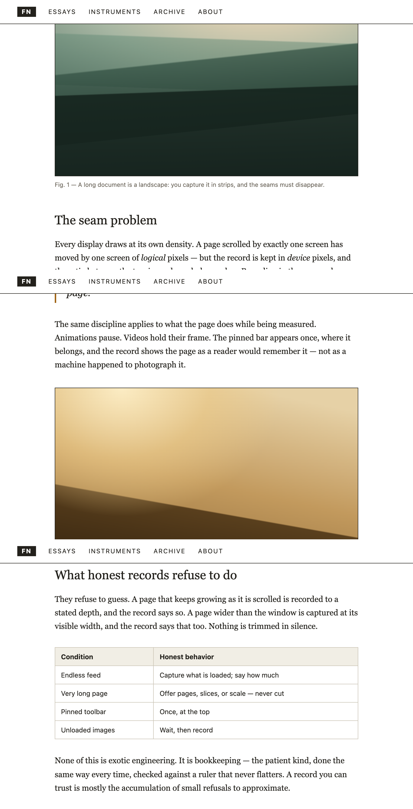
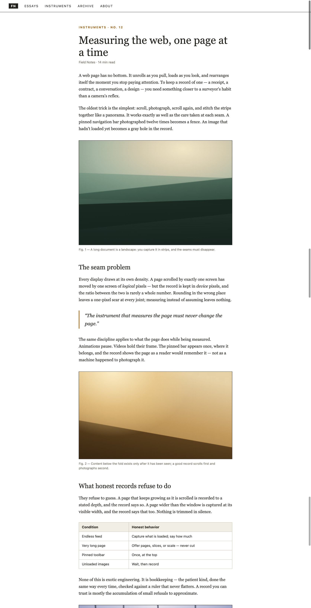

✕ TYPICAL
The pinned bar, photographed
into every strip.

✓ WHOLEPAGE
Once, at the top — where
a reader remembers it.
Cookie bars are removed, animations are frozen, and app-style pages that scroll inside a panel record their full content.